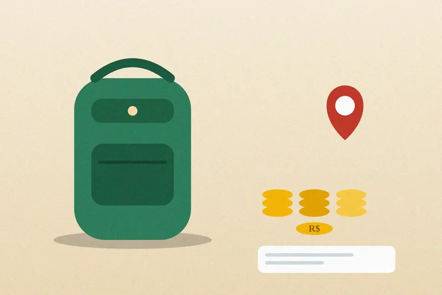

Como viajar barato com mochila

Evite custo de bagagem
Confira medidas e peso permitidos na tarifa antes da compra. Uma mochila dentro do limite pode evitar despacho, mas as regras variam por companhia.
Leve peças versáteis
Monte combinações com poucas peças, lave durante a viagem quando possível e evite itens que atendem apenas uma ocasião improvável.
Planeje o gasto total
Compare transporte até o aeroporto, alimentação, deslocamentos locais e taxas. A opção com menor preço inicial nem sempre produz o menor custo final.
Use também o passo a passo de como arrumar a mochila.